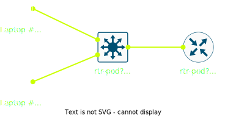

Hackday #01
Routing Foundamentals
grober Fahrplan
- Vorstellungsrunde
- statisches IP Routing
- dynamisches IP Routing
- Provider Netzwerke
- Private & Transit Peerings
Vorstellungsrunde
Pod Equipment
- 1x Linux Router
Lanner NCA-1510A; 4x 1G Base-T, 2x SFP - 1x L3 Switch oder Router
Cisco 3560CG: 10x 1G Base-T, 2x SFP(+)
Cisco 890 ISR: 8x 1G Base-T Switch, 2x SFP Routed Ports - SFP's für "WAN" Verbindungen 😉
Pod Setup
Inter Pod

Default Free Zone

statisches IP Routing
- Konfiguration L3 Switch oder Router
serielle (USB-)Konsole - Anbinden Laptops
SSH, ping, traceroute, … - Installation Linux Router
serielle (USB-)Konsole, USB Bootstick - Inter Pod Routing
Serielle Konsolen
- Cisco
9600 Baud, 8 bit, no parity, 1 stop bit (9600 8N1) - BIOS, Boot Loader, Linux
115.200 Baud, 8 data bits, no parity, 1 stop bits (115.200 8N1) - kein Flow Control
- Terminalprogramme
- Linux: minicom, screen, tmux
- Windows: PuTTY
$ minicom -D /dev/ttyUSB0
cisco commands
! change to priv lvl 15 (→ "root")
enable
! change to priv lvl 1
disable
! show commands
show run
show int descr
show int status
show ip int brief
show ip route …
show ip arp …
! filters
show run | incl vlan
show run | excl interface
show run | section router ospf
! config mode
conf t
! save config
wr m
! reset config
erase startup-config
erase flash:vlan.dat
basic cisco settings
! increase memory log size
logging buffered 65536
! local hostname
hostname rtr-pod5-pop1
! disable dns
no ip domain-lookup
! auth stuff
enable secret routeL0C4L
username ddix secret routeL0C4L
aaa new-model
! enable ntp (for later)
ntp server 195.248.83.255
! increase console+vty timeout
line con 0
exec-timeout 1440 0
line vty 0 15
exec-timeout 1440 0
static ip config
interface GigabitEthernet0/2
description RP 1G svr-pop5-fiasko
no switchport
ip address 195.248.83.? 255.255.255.254
arp timeout 300
Linux Router
Alpine Linux
- schlanke (Rolling) Linux Distro
- muslc als libc
- BusyBox als coreutils
- apk als deklarativer Paketmanager
- KISS Prinzip (
sudo,systemd) - Diskless Mode
Installation
- USB-Stick booten
https://mirrors.ibh.net/ibh/alpine/iso/ - util-linux installieren
# apk add util-linux - SSD partitionieren
# fdisk /dev/sda - Diskless Installation
# setup-bootable /dev/sdb /dev/sda1 - reboot
Setup
# finish installation (no networking, no remote repositories)
setup-alpine
# install basic tools
apk add ethtool ifstate tcpdump $EDITOR
# configure ifstate
mkdir /etc/ifstate
ifstatecli show > /etc/ifstate/config.yml
rc-update add ifstate
$EDITOR /etc/ifstate
ifstate
https://ifstate.net/ → Examples | Schema
interfaces:
- name: eth0
addresses:
- 195.248.83.240/31
link:
state: up
kind: physical
businfo: '0000:04:00.0'
routing:
routes:
- to: 0.0.0.0/0
via: 212.111.253.254
rules: []
Diskless Mode
# show changes of protected files
# → /etc/apk/protected_paths.d/
lbu status
# show changes
lbu diff
# make changes persistent
# → /media/sda1/$HOSTNAME.apkovl.tar.gz
lbu commit
alpine.iso + $HOSTNAME.apkovl.tar.gz → State
dynamisches
IP Routing
Cisco OSPF
! configure ospf router
router ospf 6500?
router-id 195.248.83.?
redistribute connected subnets
passive-interface default
! enable ospf
interface GigabitEthernet0/1
ip ospf 6500? area 0
ip ospf dead-interval 5
ip ospf hello-interval 1
! configure ospf router
router ospf 6500?
router-id 195.248.83.?
redistribute connected subnets
passive-interface default
! enable ospf
interface GigabitEthernet0/1
ip ospf 6500? area 0
ip ospf dead-interval 5
ip ospf hello-interval 1
BIRD Routing Daemon
# install & enable bird
apk add bird
rc-update add bird
# configure
$EDITOR /etc/bird/bird.conf
# install & enable bird
apk add bird
rc-update add bird
# configure
$EDITOR /etc/bird/bird.conf
BIRD Config
Provider Netze
IGP vs. EGP
Interior Gateway Protocol
- Einsatz innerhalb eines autonomen Systems
- Austausch der Netztopologie (LSDB)
- Protokoll: OSPF, EIRGP, IS-IS, …
Exterior Gateway Protocol
- Einsatz innerhalb (iBGP) und außerhalb (eBGP)
eines AS - Austausch erreichbarer Prefixe (Netze)
- Protokoll: BGP bzw. MP-BGP
BGP Route Selection (BIRD)
- Prefer route with the highest Local Preference attribute.
- Prefer route with the shortest AS path.
- Prefer IGP origin over EGP and EGP origin over incomplete.
- Prefer the lowest value of the Multiple Exit Discriminator.
- Prefer routes received via eBGP over ones received via iBGP.
- Prefer routes with lower internal distance to a boundary router.
- Prefer the route with the lowest value of router ID of the advertising router.